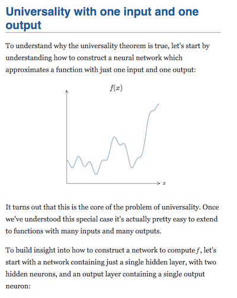
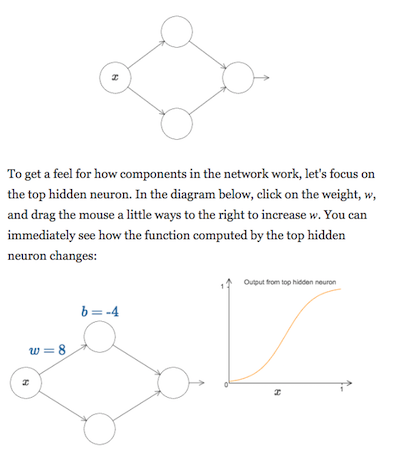

Working notes by Michael Nielsen, November 2017. Followup to (but doesn't require) my notes on ChalkTalk.
[Technology] transforms what can be said and what is said… all major advances in consciousness depend on technological transformations in implementations of the word. – Walter Ong, Interfaces of the Word (1977).
Mathematical ideas are conventionally expressed using notation and terminology developed using static media. Suppose, however, that mathematics had been invented after modern computers. This is perhaps difficult to imagine – after all, mathematics helped lead to computers – but let's do the thought experiment anyway. Might mathematical notation have developed in a different way? Would we instead have developed a dynamic, interactive notation more powerful than the static mathematical and linguistic notations in common use today?
As part of my exploration of this question, I recently developed a simple prototype system, which I call Magic Paper (code). To get a feel for what the system does, below is a video of me using Magic Paper to explain the (very simple!) basic idea underlying the proof of a beautiful theorem about artificial neural networks: the result that neural nets may be used to approximate any continuous function** See Approximation by superpositions of sigmoidal function, by George Cybenko (1989), and Multilayer feedforward networks are universal approximators, by Kurt Hornik, Maxwell Stinchcombe, and Halbert White (1989).. Note that you do not need to be deeply familiar with neural networks to follow along; an introduction to the basics of neural nets may be found here. You may wish to fullscreen the video, for easier viewing:
The design of Magic Paper was inspired in part by a system developed by Ken Perlin, known as ChalkTalk. ChalkTalk has not been publicly released at the time of this writing (November 2017), but you can get some understanding of the system by viewing from 32:40 to the end of the following video:
I built Magic Paper to explore two questions not directly addressed by ChalkTalk.
The first question is whether such a visual medium can be used to do serious mathematical exploration, the kind a researcher might do when working on a research problem. In other words: can such a system be used as a medium for creative thought? While ChalkTalk is a fun medium to explore in, it's not obvious to me that it's suitable for the kind of exploration that arises in mathematical work.
Of course, it's too ambitious for such a quickly-built prototype medium to be useable across all of mathematics. And so I decided to narrow the question, and ask whether such a medium could be used to explore at least one non-trivial mathematical question; concretely: can neural nets be used to approximate any function?
While focusing on one problem is much easier than building a general-purpose exploratory mathematical medium, it's still an extremely demanding and thus informative constraint. Furthermore, it seems likely that patterns useful in solving one mathematical problem will be reuseable in solving others.
In fact, even this is too demanding. The idea for a proof presented above wasn't actually discovered in this medium. It's a proof taken from my book on neural networks** Michael A. Nielsen, Neural Networks and Deep Learning (Chapter 4), Determination Press (2015). . Despite this, I believe this context – explaining the idea underlying the proof of a relatively recent mathematical result – is a good one for understanding what is required for a general-purpose exploratory mathematical medium.
Note that while the video of Magic Paper perhaps makes it appear to be explanatory or educational in intent, that is not the case. It is intended primarily to be a medium to think and explore in, and only secondarily to explain or to educate in. While these goals are sometimes congruent, they are also often in tension.
As an example of this tension, explanatory media are often highly polished, presenting a finished product from which distracting elements have been eliminated. By contrast, exploration involves distractions, wrong paths, and dead ends. One sees this in myriad small ways in the video: the frequent readjustment of the position and size of the glyphs; the various unnecessary weight and bias parameters that are sometimes shown; and so on. In a polished presentation these would have been eliminated, showing just what the viewer needs at any given moment. But such superfluous elements are inevitable in exploration.
Another example of the tension between education and exploration comes from the programming language Logo. Logo is often touted as an example of discovery-based learning, and in many respects it's a good exploratory medium for mathematics. However, while Logo has had considerable success in helping children understand ideas about differential geometry, differential geometers do not, as far as I'm aware, use it as a medium for research. That's potentially a problem: when education and real practice are separated, it can result in busy work on poorly-motivated “educational” problems. An interesting project would be to create a single environment which can be used for both education and research. I am optimistic this is possible; after all, beginning chess players use the same board and the same moves as the world champion.
The second question motivating Magic Paper was whether it is possible to reify deep ideas about mathematics inside the interface. That sounds cryptic, but has a straightforward meaning. To explain that meaning, let's briefly switch topic, and recall an idea from elementary physics, the principle of conservation of energy:
½mv2 + U(x) = constant
The basic point is that there's some relationship between the mass of a particle, m, its velocity v, its position x, and its potential energy U(x). The way physics is ordinarily done, we manipulate this expression using algebraic operations. But a different approach is possible. In my essay “Thought as a Technology”** Michael Nielsen, Thought as a Technology, available at http://cognitivemedium.com/tat/index.html (2016). I develop a prototype interface which reifies the principle of conservation of energy. In particular, the prototype vividly shows the user the relationship between mass, position, velocity and potential energy. This makes it possible to directly see and adjust the potential energy, see how the trajectories respond, and so on. This gives a unique and rich experience, one enabling the user to internalize a powerful set of cognitive technologies for thinking about motion.
ChalkTalk-like media seem promising for reifying such principles. Unfortunately, as far as I'm aware there are no general results about neural networks as powerful as conservation of energy. However, as a step in this direction, directly seeing the relationship between the parameters of a network and the output of various neurons does help us understand the behaviour of the network. Further work could incorporate deeper ideas about neural networks, such as learning by gradient descent, or regularization, or ways of visualizing the network** A nice recent example is the paper by Jason Yosinksi, Jeff Clune, Anh Nguyen, Thomas Fuchs, and Hod Lipson, on Understanding Neural Networks Through Deep Visualization ICML (2015).. It'd also be interesting to develop such an interface in a context where more deep principles are available – perhaps using Magic Paper to explore (say) chaotic dynamical systems, using ideas such as conservation of energy, conservation of phase space volume, Lyapunov exponents, and the KAM theorem.
Instead of drawing a neuron, why not just hit “n”? Instead of drawing axes, why not just hit “g”, for “graph”? Wouldn't such keystrokes be faster and easier?
This question has bothered me ever since first seeing Perlin demonstrate ChalkTalk. Even as an audience member, I found it much more satisfying to see him draw a glyph than to just hit a key and have it appear. And this effect was even stronger as a user of Magic Paper.
I don't have a satisfactory understanding of why it's satisfying to do this. Perhaps it's because the act of drawing activates associations in my brain that wouldn't have been activated as strongly by issuing a key command. In this sense, the act of drawing is far more meaningful – and meaning-inducing – than hitting a key. It's a little like the reasons we don't name a variable meant to represent someone's name as jnwhg; it's more meaningful to use name. Or the reasons it's better to use a map of a coastline to navigate, rather than a log of latitudes and longitudes for points on the coast.
Unfortunately, while such explanations are suggestive they're vague and incomplete. And yet my lived experience is that this is a strong effect. Something similar is true of physical activities, such as tennis or dance: there is an enormous difference between a symbolic representation – say, reading about tennis – versus actually doing it. Now, for the most part, we tend to think of these activities as a special class of “physical” activities, different from “mental” activities such as mathematics. Yet I'm not sure the distinction is all that sharp.
Advocates of embodied cognition often make strong claims about its importance. As far as I can see, the evidence they have for those claims is weak. And yet while the specific claims may be weak or wrong, I believe there is some strong and important underlying effect. It really does greatly help my thinking to sketch the glyphs in Magic Paper. I just don't understand why.
Here are three extensions that could be added to Magic Paper with 40 to 50 hours of additional work.
First, it should be possible to “lasso” several elements, combining them into a single new glyph. For instance, we could lasso the two-neuron gadget used to build tower functions, and turn it into a single re-usable glyph. That abstracted glyph could then be duplicated, moved, its parameters edited, and so on, just as any other glyph. It would also be possible to inspect the internal state of the abstracted glyph, making it possible to understand multiple layers of abstraction.
Second, it should be possible to re-parameterize the abstracted glyph, so it has just three parameters, representing the height of the tower function, a starting x value, and a finishing x value. These three parameters would then determine the biases and weights of the underlying elements. This could be implemented with a simple expression parser.
Third, it should be possible to integrate an image editor enabling the addition of extra glyphs to Magic Papers's visual language. Amongst other things, such an editor could be used to add unique visual representations for the abstracted glyphs.
I began the design work for Magic Paper with paper-and-pen storyboards and a text-based script for my video. As I developed the storyboards and script I also began to develop the system. Very quickly, the system was powerful enough that I could do basic sketches. Once that point was reached, it was more stimulating (and easier) to work within the new medium, and to abandon the storyboards and script.
I initially felt guilty at abandoning the storyboards and script, as though that was somehow the “correct” way of working. But working in the new medium quickly began to suggest useful ideas that I do not believe I would otherwise have anticipated.
As an example, in the final video we often see multiple graphs showing the behaviour of several different neurons in a network. This makes it easy for the viewer to understand the behaviours of different parts of the network, and to put it all together:
By contrast, my initial storyboards and script had just a single output graph. It was only after I began using the medium that I realized it was possible to use the graphs in this way. In particular, I didn't design the system so it could plot the behavior of intermediate neurons. Rather, that was a fortuitous happenstance, tried spontaneously as I used the medium.
Another point I did not anticipate in storyboarding and scripting was how useful it would be to move and resize the neurons and the graphs, e.g.:
A big benefit of this is object persistence. When possible, it's often useful to reuse or repurpose existing objects, since viewers have already built strong mental models of their behaviour. This kind of dynamic reuse is harder to achieve in static media. Perhaps for that reason I did not anticipate it in my storyboarding and scripting.
By contrast, my earlier description of this proof in an online book consisted of text interspersed with interactive elements, e.g.:
Many of the interactive elements depict minor variations on the same system. But because there is no object persistence, the user must parse each one separately, and put in the mental work required to understand the relationships. For the most part this is not terribly hard work, but it is an additional mental burden.
All told, while the script and storyboards were useful to bootstrap, once the medium was running, it was more generative to work directly within that, experimenting and evolving an approach I was comfortable with.
Within science and mathematics the exploration of new media forms is often not treated as serious work. This is related to my earlier observation, which is that such work is often viewed as primarily educational. Unfortunately, within the sciences education is often viewed as second-rate work. As George Bernard Shaw's famous line has it: “He who can, does. He who cannot, teaches.” This is, of course, ridiculous – I am reporting it as a common position, not agreeing with it! But I believe such sentiments underly the reasons why work experimenting with new media is often considered as “merely” unimportant educational work.
In fact, I believe this connection to education and explanation is a major reason exploration with new media is so important. The new medium forces us rethink the most fundamental parts of science and mathematics. Much advanced research work concerns esoteric subjects. But people working on new media forms have the opportunity to rethink how absolutely fundamental concepts such as number, equality, and so on. They are rethinking what mathematics and language is. I believe these experiments will eventually affect and perhaps transform the way all research is done. But it will take a huge effort, since this is not an individual-sized problem. It's a civilization-sized problem.
Thanks to Shan Carter, Andy Matuschak, Robert Ochshorn, Kanjun Qiu, and Grant Sanderson for helpful discussions.
In academic work, please cite this as: Michael A. Nielsen, “Magic Paper”, available at http://cognitivemedium.com/magic_paper/index.html (2017).
Michael Nielsen, Toward an Exploratory Medium for Mathematics (2016).
Michael Nielsen, Thought as a Technology (2016).
Bret Victor, Kill Math (2011). See also my notes on Kill Math (2014).
Bret Victor, Media for Thinking the Unthinkable (2013).
Bret Victor, Magic Ink (2006).
Seymour Papert, Mindstorms: children, computers, and powerful ideas (1980).
This work is licensed under a
Creative
Commons Attribution-NonCommercial 3.0 Unported License
. This means you're free to copy, share, and build on it, but
not to sell it. If you're interested in commercial use,
please contact me.